.jpg){kind=link}
Malibu Travel Guide
Beach city in the Santa Monica Mountains region, situated about 30 miles west of Downtown Los Angeles, known for its Mediterranean climate and its 21-mile strip of the Malibu coast
Places to See in Malibu
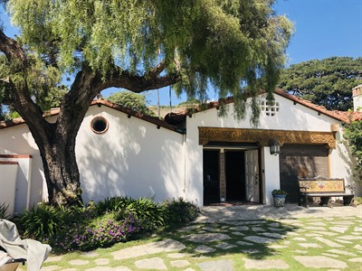
Mason550, CC BY-SA 4.0, via Wikimedia Commons; Image Size Adjusted

Adamson House Museum
Historic oceanfront estate showcasing Spanish Colonial Revival architecture, ornate ceramic tilework, and gardens overlooking a coastal lagoon and beach.
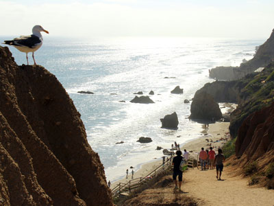
Prayitno / Thank you for (12 millions +) view, CC BY 2.0, via Wikimedia Commons; Image Size Adjusted
El Matador Beach
Secluded beach featuring dramatic sea stacks, coastal caves, sandstone cliffs, and scenic ocean views accessible by a staircase descending from the bluff above.
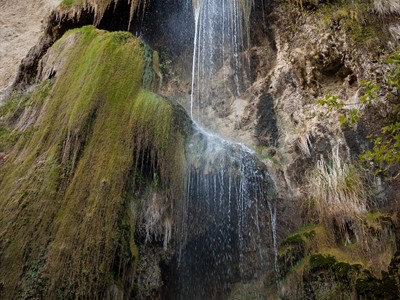
Kenneth Moore, CC BY 2.0, via Flickr; Image Size Adjusted
Escondido Falls
A scenic canyon hike leading to a multi-tiered waterfall hidden within a shaded valley of oak trees, rocky creek crossings, and lush vegetation.
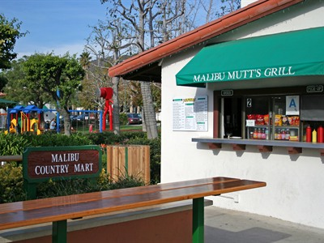
Kettlechips1, Public domain, via Wikimedia Commons; Image Size Adjusted

Malibu Country Mart and Lumber Yard
Open-air shopping and dining destination featuring upscale boutiques, restaurants, and landscaped plazas designed for a relaxed coastal lifestyle experience.
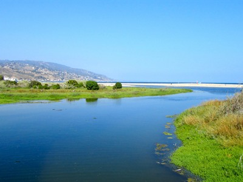
ellenm1, CC BY 2.0, via Wikimedia Commons; Image Size Adjusted

Malibu Lagoon State Beach
Coastal park featuring a scenic lagoon, sandy beach, wildlife habitats, and walking trails with panoramic ocean views.
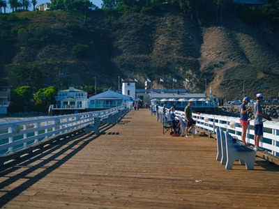
Levi Clancy, CC BY-SA 4.0, via Wikimedia Commons; Image Size Adjusted

Malibu Pier
Historic wooden pier extending into the Pacific Ocean offering ocean views, dining, fishing, and a vibrant coastal gathering place.
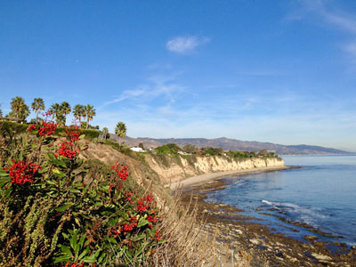
Dolly442, CC BY-SA 4.0, via Wikimedia Commons; Image Size Adjusted

Point Dume
Promontory on the coast of Malibu, California that juts out into the Pacific Ocean. The point, a long bluff, forms the northern end of the Santa Monica Bay.
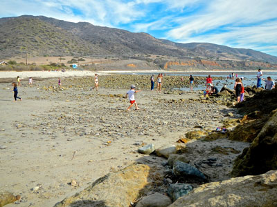
bahniuk, CC BY 3.0, via Wikimedia Commons; Image Size Adjusted

Santa Monica Mountains National Recreation Area
National recreation area containing many individual parks and open space preserves, located primarily in the Santa Monica Mountains of Southern California
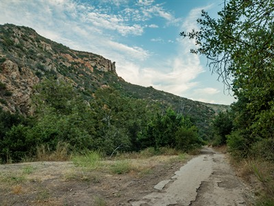
Santa Monica Mountains National Recreation Area, Public domain, via Wikimedia Commons; Image Size Adjusted
.jpg){kind=link}
Solstice Canyon
Scenic canyon destination featuring shaded hiking trails, historic ruins, a seasonal waterfall, and sweeping views of the Santa Monica Mountains.
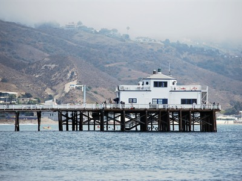
Darin R. McClure, CC BY 3.0, via Wikimedia Commons; Image Size Adjusted

Surfrider Beach
Iconic sandy beach known for world-class surfing, scenic coastal views, and a vibrant shoreline atmosphere near a tranquil lagoon and pier.
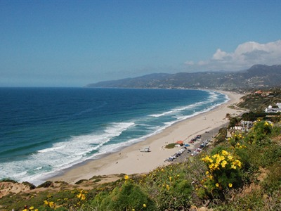
tmastro, CC BY-SA 3.0, via Wikimedia Commons; Image Size Adjusted

Zuma Beach
Expansive sandy shoreline offering wide-open beach space, gentle waves, and sweeping coastal views popular for swimming, sunbathing, and outdoor recreation.
How to Get There
Overview
Malibu is a beach city of about 10,000 residents on the Pacific coast, about 30 miles west of downtown Los Angeles, stretching 21 miles along Pacific Coast Highway between the Santa Monica Mountains and the sea. It is famous for its beaches, its surf culture and its celebrity residents, and it has become a symbol of the Southern California lifestyle.
Visitors come to Malibu for its beaches, including Surfrider Beach, Zuma Beach and El Matador State Beach, for surfing and swimming, for hiking in the Santa Monica Mountains, and for the scenery along Highway 1. The Malibu Wine Country, seaside restaurants and the Malibu Country Mart add to the appeal.
History
The Chumash lived on this coast for thousands of years, and the name Malibu comes from their village, Humaliwo, meaning "the surf sounds loudly." The Spanish and Mexican Rancho Topanga Malibu Sequit was bought by Frederick Rindge in 1892, and his widow, May Rindge, fought to keep the land closed until a public highway was built in the 1920s. Subdivision followed, and Malibu incorporated as a city in 1991. Wildfires have repeatedly affected the area, including the Woolsey Fire of 2018.
Sightseeing and Popular Landmarks
Malibu Pier and the Malibu Lagoon are the main waterfront landmarks, while Point Dume offers a headland with views of the coast and whales in winter. The Malibu Country Mart is a popular shopping center, and Solstice Canyon and Escondido Falls are favorite hikes.
Culture and Museums
The Adamson House, a 1930 Spanish Colonial Revival home decorated with Malibu Potteries tile, is a museum, and the Malibu Lagoon Museum next door tells the local history. The Getty Villa is nearby in Pacific Palisades, Pepperdine University's campus has galleries and performances, and surf contests at Surfrider Beach keep local surf culture alive.
Parks
The Santa Monica Mountains National Recreation Area covers much of the surrounding land, with trails to waterfalls and canyons such as Solstice Canyon and the Backbone Trail. Malibu Creek State Park, famous as the location of the television show M*A*S*H, and Leo Carrillo State Park have hiking and camping, and Point Dume and El Matador have scenic coves.
Seasons and Weather
Malibu has a mild Mediterranean climate, with highs in the 70s°F near the coast and warmer, drier weather in the canyons. Summer fog, called "June gloom," is common in the mornings, winter brings most of the 15 inches of annual rain, and the warm, dry Santa Ana winds in fall increase fire danger.
This article uses material from Wikipedia as well as information from official tourism and institutional sources. Key references include City of Malibu, Santa Monica Mountains National Recreation Area, Adamson House, California State Parks, and National Weather Service Los Angeles. Wikipedia material is from the article "Malibu, California", released under the Creative Commons Attribution-Share-Alike License 3.0.
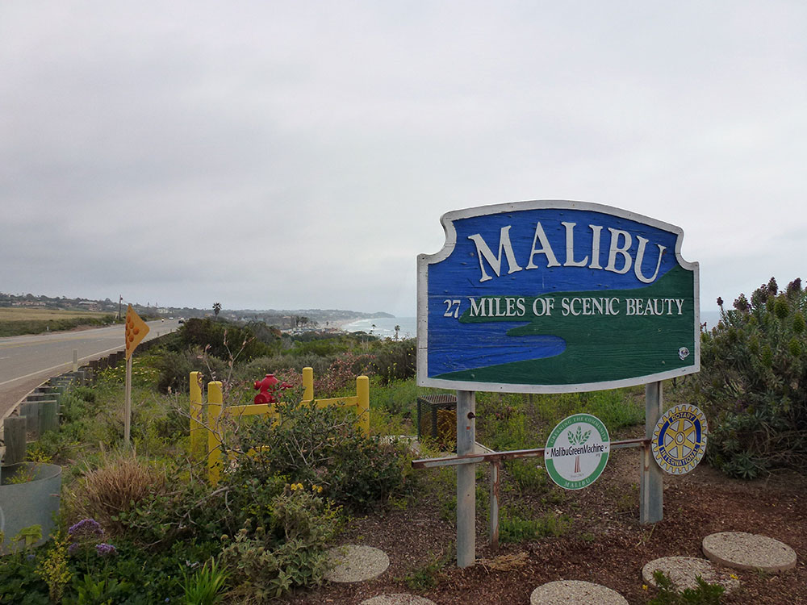
.jpeg){kind=link}
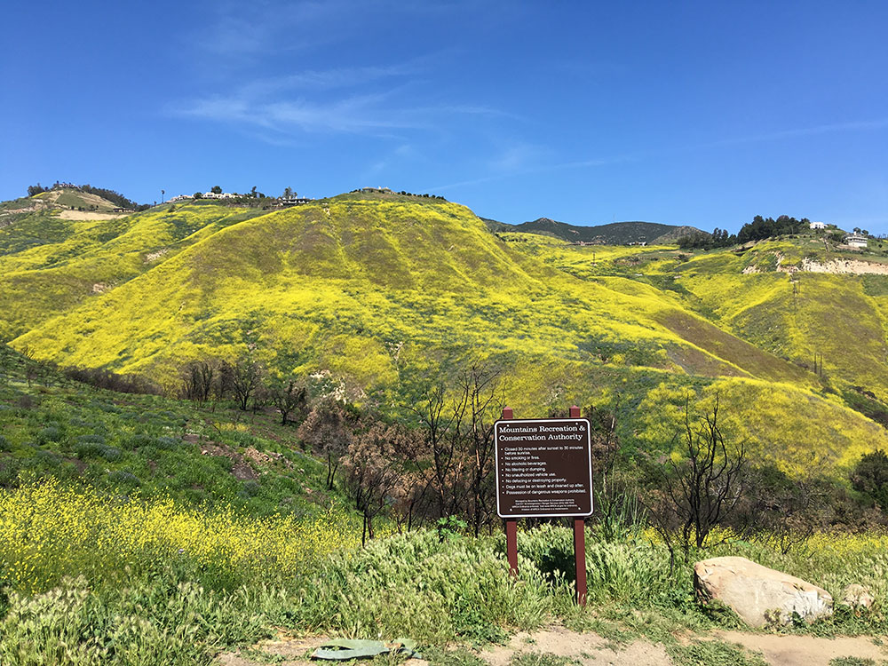

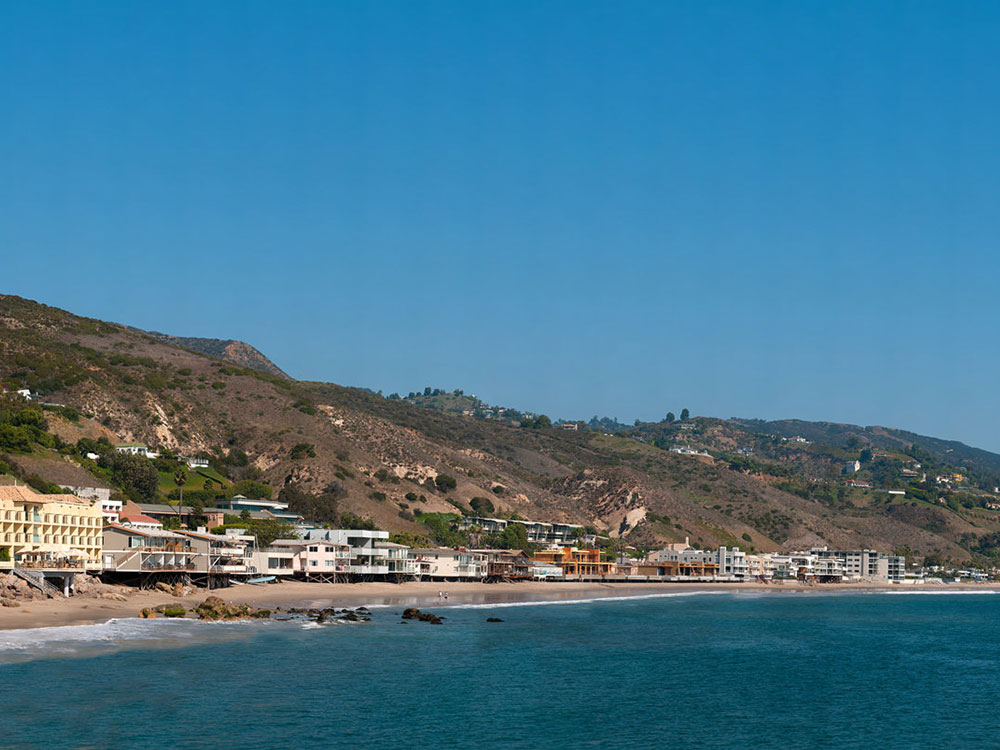

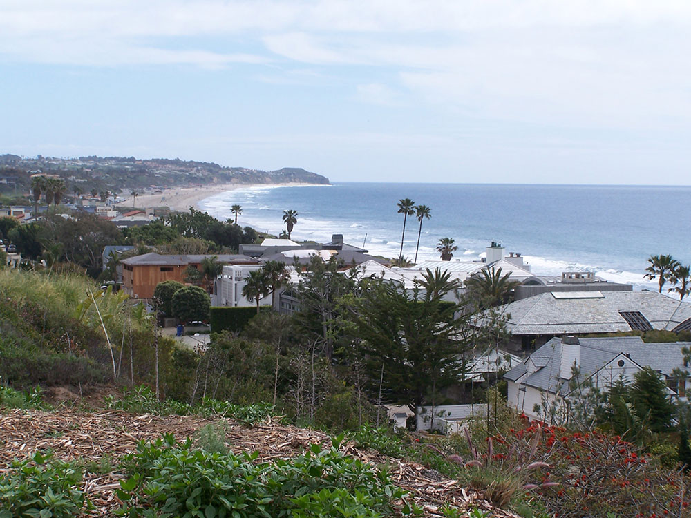

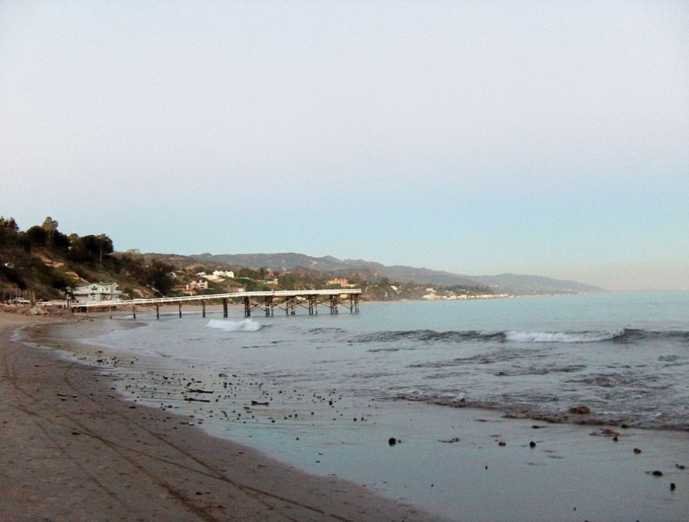

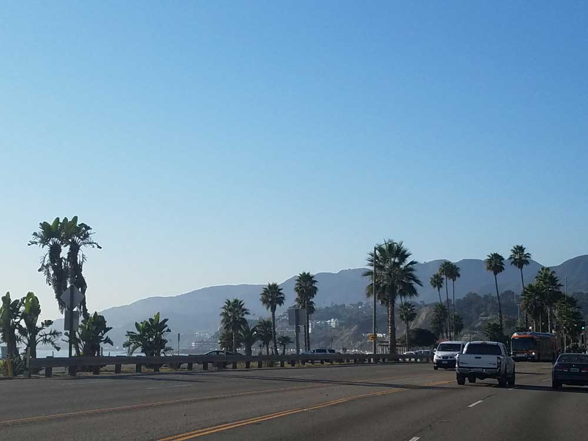